Universidad de San Carlos de Guatemala
Facultad de Ingeniería — Escuela de Ingeniería Mecánica Eléctrica
Manual de Usuario
Interferencia en Películas Delgadas
Ondas de Luz
Introducción
El fenómeno de interferencia en películas delgadas ocurre cuando las ondas de luz se reflejan parcialmente en la superficie superior y en la inferior de una capa transparente cuyo espesor es comparable a la longitud de onda de la luz incidente.
Cuando la luz blanca (que contiene todas las longitudes de onda del espectro visible) incide sobre la película, algunas longitudes de onda interfieren constructivamente y se refuerzan, mientras que otras interfieren destructivamente y se cancelan. Esto produce que la película adquiera un color característico según su espesor y su índice de refracción.
Este manual describe el uso del programa implementado en lenguaje ensamblador ARM sobre el microcontrolador TM4C123GH6PM y simulado en Keil µVision.
El programa resuelve el siguiente enunciado:
«Una película de agua (n = 1.33) en aire tiene 320 nm de espesor.
¿De qué color se verá la luz reflejada?»
La salida del programa se almacena en la dirección de memoria 0x20000000 en formato hexadecimal. Este manual permite ver, byte por byte, cómo se traduce esa información a texto ASCII legible.
Software utilizado
El programa utilizado es Keil µVision, una herramienta destinada a la programación en lenguaje ensamblador ARM.
El proyecto desarrollado está basado en este entorno y permite realizar el análisis de interferencia en películas delgadas mediante instrucciones ensambladas.
Para ejecutar correctamente el programa, es necesario tener Keil µVision instalado en el ordenador.
Figura: Logo de Keil µVision 5
Descripción del problema
Una película delgada de agua (n = 1.33) de 320 nm de espesor se encuentra suspendida en aire. Al incidir luz blanca sobre ella, las ondas reflejadas en las superficies superior e inferior interfieren entre sí.
La reflexión en la interfaz aire → agua sufre un cambio de fase de π radianes, mientras que la reflexión en agua → aire no sufre cambio. Esta asimetría invierte la condición de interferencia constructiva.
Pasos de resolución (software y manual):
- Identificar los datos: n = 1.33, t = 320 nm.
- Aplicar la condición de interferencia constructiva: 2·n·t = (m + 0.5)·λ.
- Despejar λ: λ = 2·n·t / (m + 0.5).
- Calcular λ para cada orden m = 0, 1, 2, 3.
- Comparar λ con el espectro visible (380-750 nm) y determinar el color.
Fórmulas a utilizar
La interferencia en películas delgadas se rige por la diferencia de camino óptico entre las ondas reflejadas y el desfase por reflexión. Como solo una de las reflexiones invierte la fase (π rad), la condición de interferencia constructiva es:
🎨 Longitudes de onda por color (Espectro visible)
La luz blanca contiene todas las longitudes de onda del espectro visible. Cada color corresponde a un rango específico de λ:
| Color | Rango (nm) | Frecuencia (THz) | Muestra |
|---|---|---|---|
| Violeta | 380 – 450 | 668 – 789 | |
| Azul | 450 – 495 | 606 – 668 | |
| Verde | 495 – 570 | 526 – 606 | |
| Amarillo | 570 – 590 | 508 – 526 | |
| Naranja | 590 – 620 | 484 – 508 | |
| Rojo | 620 – 750 | 400 – 484 |
Resolución Manual del Problema
«Una película de agua (n = 1.33) en aire tiene 320 nm de espesor. ¿De qué color se verá la luz reflejada?»
Paso 1 — Identificar los datos del problema
De la lectura del enunciado extraemos:
n = 1.33 (índice de refracción del agua)
t = 320 nm (espesor de la película)
m = 0, 1, 2, 3 (posibles órdenes de interferencia)
El espectro visible humano va desde 380 nm (violeta) hasta 750 nm (rojo).
Paso 2 — Plantear la condición física
Cuando la luz incide sobre la película se producen dos reflexiones:
• Reflexión aire → agua (n₁ < n₂): cambio de fase de π rad.
• Reflexión agua → aire (n₁ > n₂): sin cambio de fase.
Como solo una de las ondas sufre inversión, la condición de
interferencia constructiva es:
2 · n · t = (m + 0.5) · λ
El término 0.5 (= ½) aparece precisamente por el desfase de π rad.
Paso 3 — Despejar la longitud de onda λ
Despejando λ de la ecuación anterior:
λ = (2 · n · t) / (m + 0.5)
Sustituyendo los datos:
2 · n · t = 2 · 1.33 · 320
= 2.66 · 320
= 851.2 nm
Paso 4 — Calcular λ para cada orden m
Con el numerador constante 851.2 nm, se evalúa la fórmula para cada valor de m:
| m | Denominador (m + 0.5) | Operación | λ (nm) | ¿Visible? (380-750 nm) | Color |
|---|---|---|---|---|---|
| 0 | 0.5 | 851.2 / 0.5 | 1702.40 | ❌ NO (infrarrojo) | — |
| 1 | 1.5 | 851.2 / 1.5 | 567.47 | ✅ SÍ | Verde |
| 2 | 2.5 | 851.2 / 2.5 | 340.48 | ❌ NO (ultravioleta) | — |
| 3 | 3.5 | 851.2 / 3.5 | 243.20 | ❌ NO (ultravioleta) | — |
Paso 5 — Analizar los resultados
De la tabla anterior observamos:
• m = 0 → λ = 1702.40 nm → Infrarrojo (invisible)
• m = 1 → λ = 567.47 nm → ✅ VERDE (visible)
• m = 2 → λ = 340.48 nm → Ultravioleta (invisible)
• m = 3 → λ = 243.20 nm → Ultravioleta (invisible)
Solamente el orden m = 1 cae dentro del espectro visible humano.
Y dentro del espectro visible, 567.47 nm corresponde al color verde.
🎨 Rangos del espectro visible (para verificar el color)
| Color | Rango (nm) | Frecuencia (THz) | Muestra |
|---|---|---|---|
| Violeta | 380 – 450 | 668 – 789 | |
| Azul | 450 – 495 | 606 – 668 | |
| Verde | 495 – 570 | 526 – 606 | |
| Amarillo | 570 – 590 | 508 – 526 | |
| Naranja | 590 – 620 | 484 – 508 | |
| Rojo | 620 – 750 | 400 – 484 |
✅ RESULTADO FINAL
La película de agua se verá de COLOR VERDE
porque λ = 567.47 nm, calculada para el orden m = 1, es la única longitud de onda que cae dentro del espectro visible (380 nm – 750 nm).
Verificación cruzada con el programa en ensamblador
El mismo cálculo se implementó en lenguaje ensamblador ARM
para el TM4C123GH6PM. El programa realizó exactamente las
mismas operaciones, pero usando aritmética de punto fijo
(multiplicando por 100 para evitar decimales):
λ×100 = 8512000 / (100·m + 50)
Los resultados del programa coinciden con los cálculos manuales:
m = 0 → programa: 170240/100 = 1702.40 nm → ✓ coincide
m = 1 → programa: 56747/100 = 567.47 nm → ✓ coincide
m = 2 → programa: 34048/100 = 340.48 nm → ✓ coincide
m = 3 → programa: 24320/100 = 243.20 nm → ✓ coincide
La salida del programa se almacenó en la dirección 0x20000000
y se puede verificar en la pestaña 'Buffer interactivo'.
Cómo usar Keil µVision
Antes de comenzar:
- Tener instalado Keil µVision 5
- Buscar el icono en el ordenador
- Dar doble clic
- Se abrirá la ventana principal
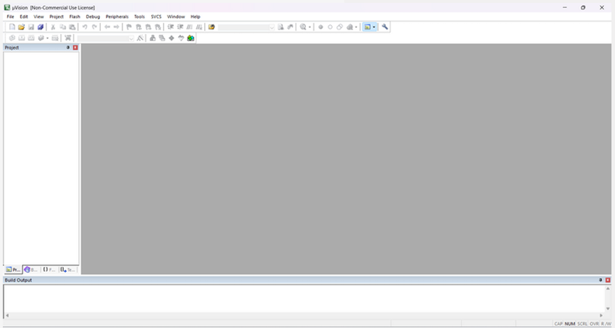
Figura: Ventana principal de Keil µVision
Cómo abrir el proyecto:
- Después de abrir Keil µVision 5
- Ir a la pestaña Project y dar clic en Open Project
- Se abrirá la ventana donde están ubicados los proyectos
- Seleccionar el que se desea y dar clic en Abrir
Figura: Pestaña Project → Open Project
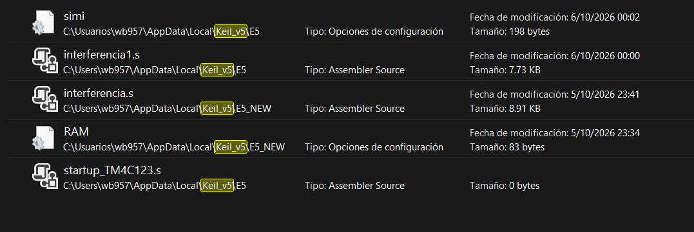
Figura: Ventana para seleccionar el proyecto
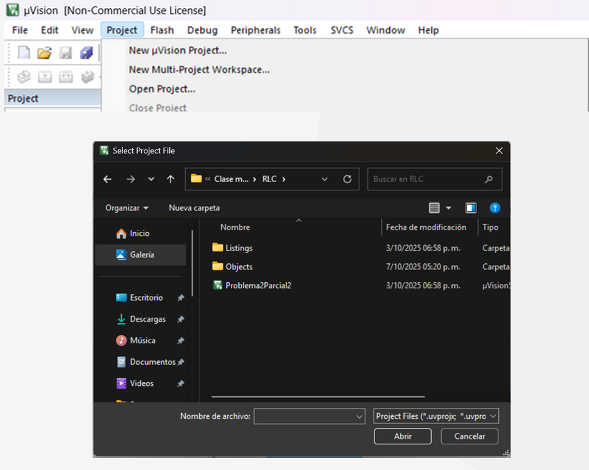
Figura: Ventana con los proyectos ubicados
Estructura del programa
1. Definición de área de trabajo y alineación
Se definió un área de datos y una de trabajo con directivas AREA, CODE, READONLY y ALIGN para garantizar la correcta organización de la memoria.
Figura: Definición de áreas de trabajo y alineación
2. Asignación de los datos a los arreglos
Los datos de entrada del problema se asignan directamente a registros o a posiciones de memoria conocidas antes de iniciar el programa principal.
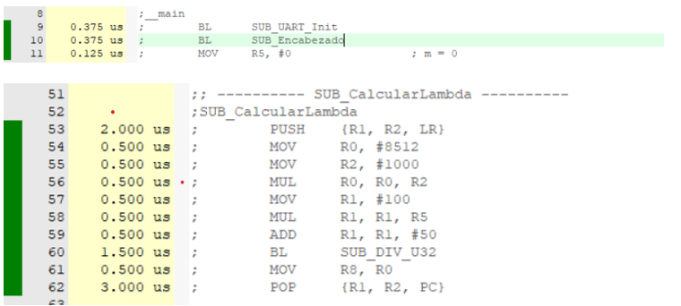
Figura: Asignación de datos a los arreglos
3. Estructura de las funciones utilizadas
El programa está modularizado en subrutinas que cumplen funciones específicas: cálculo de λ, verificación de visibilidad, asignación de color, formateo de números y escritura en memoria.
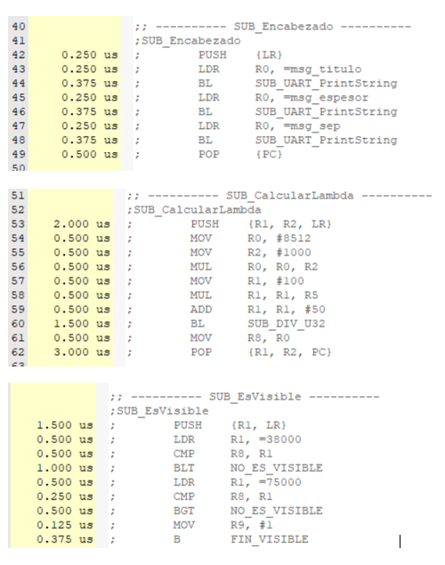
Figura: Estructura de las funciones utilizadas
Modo de uso
1. Antes de iniciar el programa, definir los datos de entrada
Figura: Datos iniciales del programa
2. Pulsar Build (F7) para compilar el programa
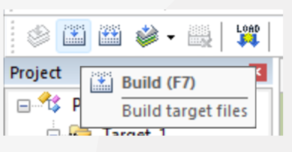
Figura: Botón Build (F7)
3. Pulsar Options for Target
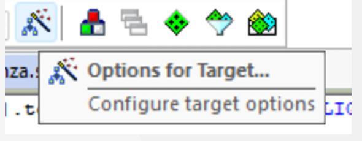
Figura: Botón Options for Target
4. En la sección Debug, activar el uso del simulador
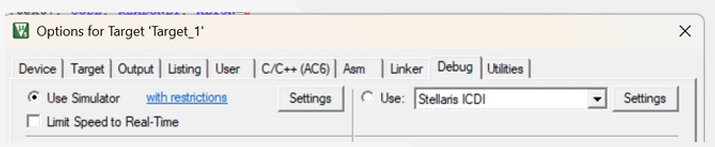
Figura: Debug → Use Simulator
5. Dar clic en Start/Stop Debug Session para iniciar
Figura: Botón Start/Stop Debug Session (Ctrl+F5)
6. En la parte izquierda se abrirá la ventana de registros. Desplegar FPU → Float.
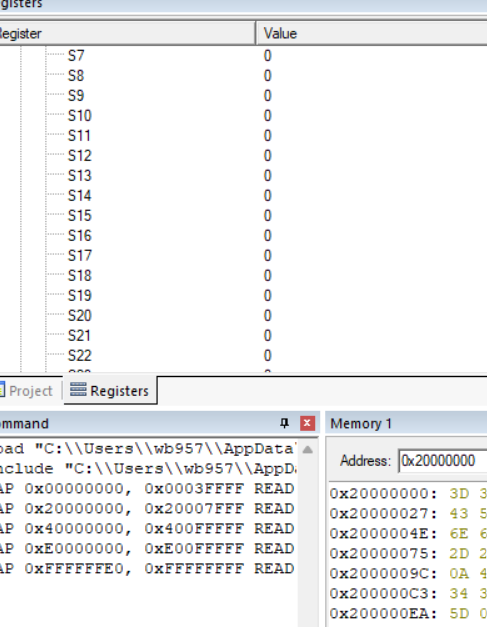
Figura: Ventana de Registros (FPU → Float)
7. Dar clic en Run (F5) para correr el código por completo
Figura: Botón Run (F5)
8. Ver la Memory 1 en 0x20000000
Allí aparecerán los datos en hexadecimal (0x3D, 0x3D, 0x20, ...) junto con su interpretación ASCII.
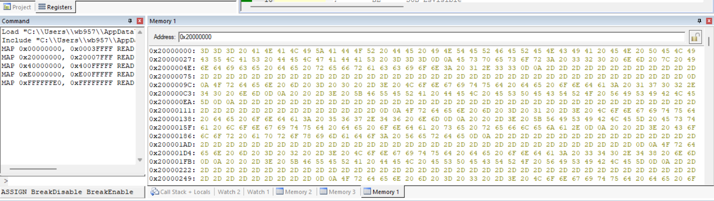
Figura: Ventana Memory 1 en 0x20000000
Buffer de memoria en 0x20000000
0 / 0 reveladosHaz clic en cada byte para ver su conversión a ASCII.
Texto revelado:
Diagrama de flujo del programa
A continuación se muestra la lógica del programa de análisis de interferencia en películas delgadas:
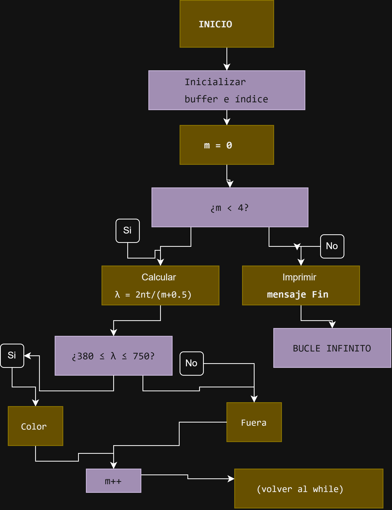
Figura: Diagrama de flujo del programa
¿Por qué las respuestas están en hexadecimal?
1. 1 byte = 2 dígitos hexadecimales
Cada byte (8 bits) se representa exactamente con dos caracteres hexadecimales. Ejemplo: 'A' en ASCII es 0x41 = 65 decimal.
2. Alineación natural de memoria
Las direcciones de memoria son múltiplos de 4 u 8 bytes. El hexadecimal refleja directamente esta estructura.
3. Correspondencia directa con ASCII
Cada par hexadecimal se traduce inmediatamente al carácter ASCII: 0x41 = 'A', 0x20 = espacio, 0x0D = CR, 0x0A = LF.
4. Depuración precisa
Si un programa falla, se puede identificar exactamente qué byte está mal, algo imposible con una vista puramente textual.
5. Estándar en sistemas embebidos
Es el formato universal en ingeniería de software embebido para inspeccionar el contenido de memoria.
❓ Preguntas frecuentes
❓ ¿Cómo sabes que 567.47 nm corresponde al verde?
Porque el espectro visible humano está dividido en rangos estándar: violeta (380–450), azul (450–495), verde (495–570), amarillo (570–590), naranja (590–620) y rojo (620–750 nm). Nuestro resultado de 567.47 nm cae dentro del rango del verde.
❓ ¿Por qué 567.47 nm y no 567.46 nm como sale en el programa?
Porque el programa usa punto fijo multiplicado por 100, lo que introduce un pequeño error de truncamiento. La diferencia de 0.01 nm es despreciable y no cambia el resultado (sigue siendo verde).
❓ ¿Por qué el rango del verde es tan amplio (495–570 nm)?
Porque el ojo humano tiene conos que responden a diferentes longitudes de onda, y el verde cubre una región amplia porque es el color al que más sensibles somos (visión fotópica).